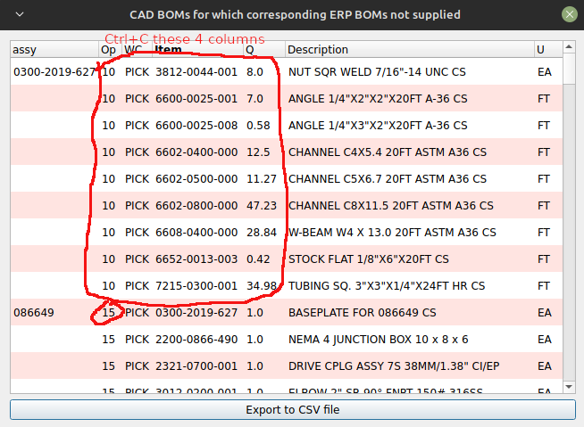
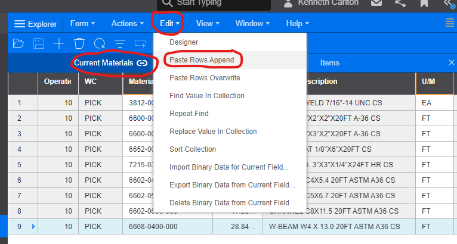

The bomcheck program was originally written to be run from a Command Prompt Terminal (cmd.exe). The program bomcheckgui is actually a wrapper that presents a graphical user interface (gui) for the bomcheck program. That is, bomcheckgui runs the bomcheck program in the background.
Drag and drop the BOM files that you want to be checked onto the central portion of the gui. File names that do not end with _sw.xlsx or sl_xlsx will be ignored. Files that contain a tilde character, ~, will also be ignored. Optionally drag and drop a directory that contains the BOM files.
Press the green check button icon to have your BOMs analyzed. To print results or save results to a csv file, click the boxes located at the bottom of the pop up window containing results. For more information about csv files, see bomcheck_help.html.
To clear the list of files in the drop area, click the clear button, i.e. the windshield wiper icon
If at some point in your work day you close the folder that contains your BOMs, and later you want to reopen it to make changes, instead of having to search for that folder again, click on the folder icon. Your folder will open.
If bomcheck encounters a CAD BOM for which no ERP was found to compare it to, bomcheckgui outputs a "CAD BOM Table" which looks like this:
 Image #1, CAD BOM Table.
Into the ERP (i.e. SyteLine), after Copying, the result will look like:
 Image #2, ERP program
Here are steps to take:
When you're pasting, if an error message pops up saying Slow Inventory Item, or Part Doesn't exist, etc., click the button in the pop-up menu that will allow your paste operation to continue. You can go back later once the pasting is done to make corrections. If an item doesn't exist, you won't be able to save the BOM you just created. Therefore you are forced to take steps to correct.
Characteristics about this table that you should be aware of:
1. If you copy a block of text from this table into the BOM of the ERP program, make sure the first column in the ERP BOM is Op, the second, WC, the third Item, and the fourth Qty. Placement of other columns is not as important, but Description and U/M are good choices.
2. When you copy (Ctrl+C) a block of text in order to paste it into the ERP BOM, copy ONLY the Op, WC, Item, and Q columns from the CAD BOM Table. The ERP will automatically fill in the Description and U/M.
3. When you do your Ctrl+C copy, and if you additionally copy the Description and/or U/M, the Ctrl+C will automatically reject copying the Description and U/M to the clipboard. Therefore it will not be pasted.
4. Always use the Append menu option of the ERP program to do your pasting. Avoid other methods. They don't work.
5. If Op 10 is not the Pick op, you can change the op for a particular subassembly by placing the appropriate op number at first part for the subassembly. The op no. for remaining subassy parts will automatically fill in. Assembly 2700-2003-307 above shows a different op number.
6. If your op no. is not correct, that is, it is not a Pick op, and you paste in your text, the name in the WC column will not show PICK. As in the table above, FAB is shown. Therefore you should correct the op number. Note: Even the you pasted in PICK, will will not overwrite the WC for that Op. This is a good thing.